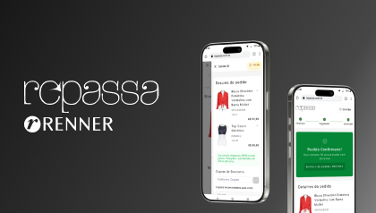
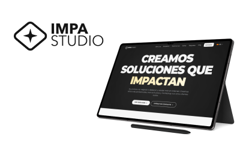
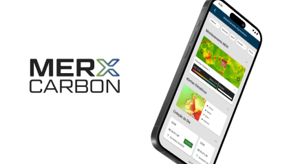

Sobre
Sou Product Designer apaixonado por criar interfaces acessíveis e visualmente precisas, que unem design inteligente a engenharia robusta. Meu foco está na interseção entre design e desenvolvimento, onde transformo ideias em experiências que não apenas encantam visualmente, mas também são projetadas com rigor para garantir desempenho e usabilidade.
Atualmente, atuo como Product Designer Sênior na Repassa, com especialização em acessibilidade e Design System. Contribuo diretamente para a criação e manutenção de componentes de UI que sustentam o front-end da plataforma, assegurando conformidade com padrões de acessibilidade web e as melhores práticas do setor, para entregar uma experiência realmente inclusiva.
Minha trajetória inclui a melhoria da experiência do usuário em diferentes contextos — de sistemas empresariais e grandes corporações a startups e pequenos negócios digitais. Também participei ativamente de comunidades de empreendedorismo local, apoiando empresários a colocarem o usuário no centro de suas decisões.
Fora do trabalho, gosto de cozinhar, explorar trilhas correndo em busca de boas paisagens e, acima de tudo, aproveitar o tempo com minha esposa e nossos dois filhos.
Experiência
-
MAI 2024 — ATUAL Atuação em produtos de e-commerce e backoffice, melhorando a jornada do usuário e alinhando design e desenvolvimento. Participei ativamente em discoveries com os PO's e otimizei a jornada de devolução de pedidos, reduzindo os custos logísticos em 54%.
- E-commerce
- UX Research
- Otimização de Processos
-
FEV 2023 — MAI 2024 Conduzi pesquisas exploratórias com clientes para mapear melhorias no sistema contábil. Simplifiquei a gestão de relatórios e otimizei ferramentas contábeis, resultando em um aumento de 74% na satisfação dos usuários, medido pelo Google Analytics.
- UX Research
- Análise de Dados
- Sistemas Contábeis
-
MAR 2022 — FEV 2023 Desenvolvi o Design System Agri e criei ferramentas para commodities e geoprocessamento. Implementei a funcionalidade de monitoramento de CBIOs, resultando em um aumento de 75% nas vendas e na captação de novos clientes.
- Design System
- Geoprocessamento
- Commodities
-
ABR 2020 — MAR 2022 Reduzi o tempo médio de monitoria em 40% e aumentei a taxa de qualidade de atendimento em 90%, impactando diretamente o desempenho da empresa. Apresentei o produto a investidores, garantindo destaque em programas de investimento.
- Métricas de Produto
- Qualidade de Atendimento
- Pitch para Investidores
Projetos
-

Repassa: E-commerce de moda sustentável
Redesenhei a jornada de compra e venda da Repassa, o maior brechó online do Brasil. O projeto focou em otimizar a usabilidade, aumentar a conversão e criar uma experiência mais engajadora para os usuários, fortalecendo o conceito de economia circular.
- E-commerce
- UX Strategy
- UI Design
- Moda Sustentável
-

Impastudio: Design, Marketing e Desenvolvimento
Como co-fundador da Impastudio, atuei em múltiplos projetos para pequenas e médias empresas, oferecendo soluções integradas de design de marca, marketing digital e desenvolvimento de sites. Ajudei negócios locais a fortalecerem sua presença online e alcançarem novos clientes.
- Branding
- Marketing Digital
- Desenvolvimento Web
-

Merx: Ferramentas de Precisão para o Agronegócio
Desenvolvi interfaces complexas para uma plataforma agritech B2B, incluindo ferramentas de geoprocessamento, monitoramento de créditos de carbono (CBIOs) e relatórios avançados, focando em usabilidade e precisão de dados.
- Agritech
- B2B
- Geoprocessamento
- Design de Dados
Blog
-
AGO 15, 2024 Acessibilidade na Prática: 5 Dicas para um Design Inclusivo
Explorando como pequenas mudanças no processo de design podem criar um impacto gigante na vida de usuários com diferentes necessidades. Abordamos desde contraste de cores até navegação por teclado.
- Acessibilidade
- WCAG
- UX Design
-
JUL 22, 2024 Design Systems: Mais do que uma Biblioteca de Componentes
Um mergulho profundo em como um Design System bem estruturado pode acelerar o desenvolvimento, garantir consistência visual e fortalecer a colaboração entre equipes de design e engenharia.
- Design System
- UI Engineering